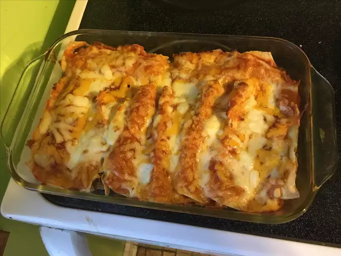

Enchiladas

Prep Time: 1 hour
Cook Time: 25 minutes
Ingredients
- 12-14 corn tortillas
- 40 oz La Plumas Mild Red Enchilada sauce (or your favorite enchilada sauce)
- 8 oz shredded cheese
- 1 lb shredded chicken
Directions
- Get a glass 9x13 baking pan and coat lightly with non-stick spray.
- Prepare corn tortillas by lightly spreading oil on both side and heat 90 seconds each side.
This makes them pialble and not fall apart during cooking. Set aside them aside.
- Shred 8 oz of cheese and store in refrigeator until ready. You can use less cheese if desired.
- Preheat oven to 325°F.
- Pour can of enchilada sauce into a steel pan and mix in shredded chicken.
- Dip corn tortillas into sauce, add chicken and cheese, roll into a taquito, and place into pan.
- Repeat until pan is full.
- Pour the extra sauce on the enchiladas to keep them moist.
- Sprinkle cheese onto them. Control how much cheese you want.
- Cover the pan with aluminum foil and place in center.
- Bake for 25 minutes.
- Remove from oven and remove foil.
- Let it sit for five minutes and enjoy with beans and rice if desired.
Home